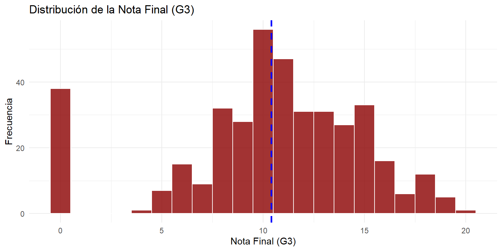
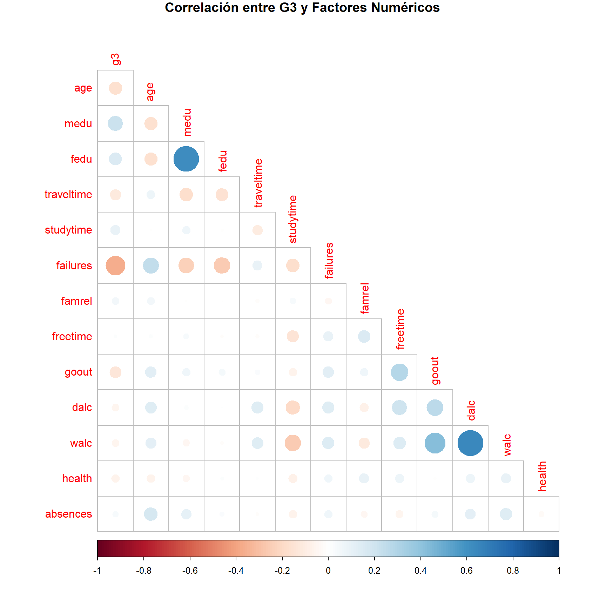
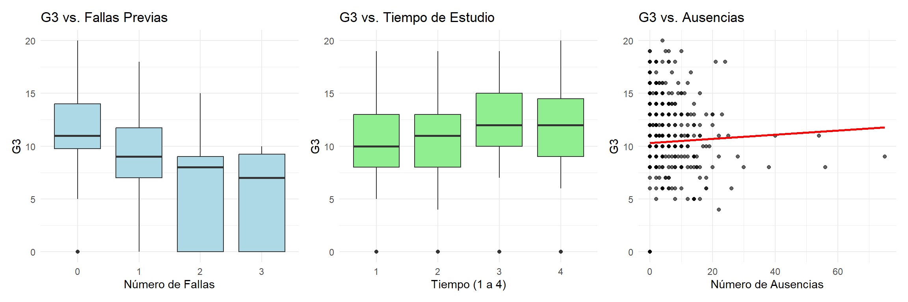

| Variable | Tipo | Valores | Descripción |
|---|---|---|---|
| school | Categórica | GP, MS | Escuela del estudiante (GP: Gabriel Pereira, MS: Mousinho da Silveira) |
| sex | Categórica | F, M | Sexo del estudiante (F: Femenino, M: Masculino) |
| age | Numérica | 15-22 | Edad del estudiante en años |
| address | Categórica | U, R | Tipo de domicilio del estudiante (U: Urbano, R: Rural) |
Análisis Predictivo del Rendimiento Académico Estudiantil
Identificación de Factores Clave y Modelos Predictivos para el Éxito Estudiantil
Introducción
El conjunto de datos Student Performance contiene información detallada sobre el rendimiento académico de estudiantes de secundaria en la asignatura de Matemáticas, junto con una amplia gama de variables demográficas, sociales, familiares y conductuales. Los datos fueron recopilados mediante encuestas en dos escuelas secundarias públicas de Portugal y están disponibles en el repositorio UCI Machine Learning.
Basados en la descripción del respositorio, el rendimiento académico de los estudiantes no depende únicamente de su capacidad cognitiva, sino que está fuertemente influenciado por factores contextuales como el entorno familiar, los hábitos de estudio, el apoyo escolar, las relaciones sociales y las condiciones socioeconómicas. En este contexto, identificar tempranamente a los estudiantes en riesgo de reprobación permite a las instituciones educativas implementar estrategias de intervención oportuna, optimizando recursos y promoviendo la equidad en el aprendizaje. Por ello, es crucial desarrollar modelos predictivos que, a partir de variables observables al inicio del curso, puedan anticipar el resultado académico final.
El conjunto de datos incluye 395 observaciones y 33 variables, entre las que se encuentran:
Demográficas: edad, género, tipo de residencia (urbana o rural).
Familiares: nivel educativo de los padres, ocupación, tipo de tutor, calidad de las relaciones familiares.
Académicas: número de ausencias, fracasos previos, apoyo escolar extra, acceso a internet.
De comportamiento: tiempo de estudio, frecuencia de salidas con amigos, consumo de alcohol, tiempo libre.
De desempeño: calificaciones en el primer (G1), segundo (G2) y tercer período (G3).
En este proyecto de clasificación binaria; el objetivo es detectar si un estudiante aprobará o reprobará, transformando la variable objetivo continua (G3) en una variable categórica binaria. Así, en lugar de predecir la calificación exacta, se define la variable respuesta Pass como:
\[ \texttt{Pass} =\begin{cases}\text{yes}, & \text{si } \texttt{G3} \geq 10 \\\text{no}, & \text{si } \texttt{G3} < 10\end{cases} \]
Este umbral (10 sobre 20) corresponde al criterio tradicional de aprobación en el sistema educativo portugués . Es importante destacar que, para preservar la validez de la predicción temprana, las calificaciones intermedias (G1 y G2) se excluyen del conjunto de predictores, evitando así cualquier fuga de información y asegurando que el modelo se base únicamente en factores observables antes del cierre del curso.
Business understanding
Planteamos algunas preguntas sobre nuestros datos:
- ¿Un mayor nivel educativo de los padres se asocia con una mayor probabilidad de aprobación?
- ¿El número de fracasos previos es el predictor más fuerte de reprobación?
- ¿El apoyo escolar extra mejora significativamente las probabilidades de aprobación?
- ¿Una mayor frecuencia de salidas con amigos se asocia con menor rendimiento?
Compresión de los datos.
Descripción del Conjunto de Datos
El proyecto utiliza el conjunto de datos de Rendimiento Estudiantil que contiene 395 estudiantes con 33 atributos que describen variable de tipo: demografía, contexto social y registros académicos.
| Variable | Tipo | Valores | Descripción |
|---|---|---|---|
| reason | Categórica | home, reputation, course, other | Razón para elegir esta escuela |
| traveltime | Ordinal | 1-4 | Tiempo de viaje casa-escuela (1: <15min, 2: 15-30min, 3: 30min-1h, 4: >1h) |
| studytime | Ordinal | 1-4 | Tiempo de estudio semanal (1: <2h, 2: 2-5h, 3: 5-10h, 4: >10h) |
| failures | Numérica | 0-4 | Número de fallos académicos previos |
| schoolsup | Categórica | yes, no | Recibe apoyo educativo extra de la escuela |
| famsup | Categórica | yes, no | Recibe apoyo educativo de la familia |
| paid | Categórica | yes, no | Toma clases extra pagadas en matemáticas |
| activities | Categórica | yes, no | Participa en actividades extracurriculares |
| nursery | Categórica | yes, no | Asistió a guardería |
| higher | Categórica | yes, no | Desea seguir educación superior |
| absences | Numérica | 0-93 | Número de ausencias escolares |
| Variable | Tipo | Valores | Descripción |
|---|---|---|---|
| internet | Categórica | yes, no | Tiene acceso a internet en casa |
| romantic | Categórica | yes, no | Está en una relación romántica |
| famrel | Ordinal | 1-5 | Calidad de relaciones familiares (1: muy mala - 5: excelente) |
| freetime | Ordinal | 1-5 | Tiempo libre después de la escuela (1: muy bajo - 5: muy alto) |
| goout | Ordinal | 1-5 | Frecuencia de salidas con amigos (1: muy baja - 5: muy alta) |
| Dalc | Ordinal | 1-5 | Consumo de alcohol entre semana (1: muy bajo - 5: muy alto) |
| Walc | Ordinal | 1-5 | Consumo de alcohol en fin de semana (1: muy bajo - 5: muy alto) |
| health | Ordinal | 1-5 | Estado de salud actual (1: muy malo - 5: muy bueno) |
| school | sex | age | address | famsize | pstatus | medu | fedu | mjob | fjob | reason | guardian | traveltime | studytime | failures | schoolsup | famsup | paid | activities | nursery | higher | internet | romantic | famrel | freetime | goout | dalc | walc | health | absences | g1 | g2 | g3 |
|---|---|---|---|---|---|---|---|---|---|---|---|---|---|---|---|---|---|---|---|---|---|---|---|---|---|---|---|---|---|---|---|---|
| GP | F | 18 | U | GT3 | A | 4 | 4 | at_home | teacher | course | mother | 2 | 2 | 0 | yes | no | no | no | yes | yes | no | no | 4 | 3 | 4 | 1 | 1 | 3 | 6 | 5 | 6 | 6 |
| GP | F | 17 | U | GT3 | T | 1 | 1 | at_home | other | course | father | 1 | 2 | 0 | no | yes | no | no | no | yes | yes | no | 5 | 3 | 3 | 1 | 1 | 3 | 4 | 5 | 5 | 6 |
| GP | F | 15 | U | LE3 | T | 1 | 1 | at_home | other | other | mother | 1 | 2 | 3 | yes | no | yes | no | yes | yes | yes | no | 4 | 3 | 2 | 2 | 3 | 3 | 10 | 7 | 8 | 10 |
| GP | F | 15 | U | GT3 | T | 4 | 2 | health | services | home | mother | 1 | 3 | 0 | no | yes | yes | yes | yes | yes | yes | yes | 3 | 2 | 2 | 1 | 1 | 5 | 2 | 15 | 14 | 15 |
| GP | F | 16 | U | GT3 | T | 3 | 3 | other | other | home | father | 1 | 2 | 0 | no | yes | yes | no | yes | yes | no | no | 4 | 3 | 2 | 1 | 2 | 5 | 4 | 6 | 10 | 10 |
| GP | M | 16 | U | LE3 | T | 4 | 3 | services | other | reputation | mother | 1 | 2 | 0 | no | yes | yes | yes | yes | yes | yes | no | 5 | 4 | 2 | 1 | 2 | 5 | 10 | 15 | 15 | 15 |
| GP | M | 16 | U | LE3 | T | 2 | 2 | other | other | home | mother | 1 | 2 | 0 | no | no | no | no | yes | yes | yes | no | 4 | 4 | 4 | 1 | 1 | 3 | 0 | 12 | 12 | 11 |
| GP | F | 17 | U | GT3 | A | 4 | 4 | other | teacher | home | mother | 2 | 2 | 0 | yes | yes | no | no | yes | yes | no | no | 4 | 1 | 4 | 1 | 1 | 1 | 6 | 6 | 5 | 6 |
| GP | M | 15 | U | LE3 | A | 3 | 2 | services | other | home | mother | 1 | 2 | 0 | no | yes | yes | no | yes | yes | yes | no | 4 | 2 | 2 | 1 | 1 | 1 | 0 | 16 | 18 | 19 |
| GP | M | 15 | U | GT3 | T | 3 | 4 | other | other | home | mother | 1 | 2 | 0 | no | yes | yes | yes | yes | yes | yes | no | 5 | 5 | 1 | 1 | 1 | 5 | 0 | 14 | 15 | 15 |
| Name | Piped data |
| Number of rows | 395 |
| Number of columns | 33 |
| _______________________ | |
| Column type frequency: | |
| character | 17 |
| numeric | 16 |
| ________________________ | |
| Group variables | None |
Variable type: character
| skim_variable | n_missing | complete_rate | min | max | empty | n_unique | whitespace |
|---|---|---|---|---|---|---|---|
| school | 0 | 1 | 2 | 2 | 0 | 2 | 0 |
| sex | 0 | 1 | 1 | 1 | 0 | 2 | 0 |
| address | 0 | 1 | 1 | 1 | 0 | 2 | 0 |
| famsize | 0 | 1 | 3 | 3 | 0 | 2 | 0 |
| pstatus | 0 | 1 | 1 | 1 | 0 | 2 | 0 |
| mjob | 0 | 1 | 5 | 8 | 0 | 5 | 0 |
| fjob | 0 | 1 | 5 | 8 | 0 | 5 | 0 |
| reason | 0 | 1 | 4 | 10 | 0 | 4 | 0 |
| guardian | 0 | 1 | 5 | 6 | 0 | 3 | 0 |
| schoolsup | 0 | 1 | 2 | 3 | 0 | 2 | 0 |
| famsup | 0 | 1 | 2 | 3 | 0 | 2 | 0 |
| paid | 0 | 1 | 2 | 3 | 0 | 2 | 0 |
| activities | 0 | 1 | 2 | 3 | 0 | 2 | 0 |
| nursery | 0 | 1 | 2 | 3 | 0 | 2 | 0 |
| higher | 0 | 1 | 2 | 3 | 0 | 2 | 0 |
| internet | 0 | 1 | 2 | 3 | 0 | 2 | 0 |
| romantic | 0 | 1 | 2 | 3 | 0 | 2 | 0 |
Variable type: numeric
| skim_variable | n_missing | complete_rate | mean | sd | p0 | p25 | p50 | p75 | p100 | hist |
|---|---|---|---|---|---|---|---|---|---|---|
| age | 0 | 1 | 16.70 | 1.28 | 15 | 16 | 17 | 18 | 22 | ▇▅▅▁▁ |
| medu | 0 | 1 | 2.75 | 1.09 | 0 | 2 | 3 | 4 | 4 | ▁▃▆▆▇ |
| fedu | 0 | 1 | 2.52 | 1.09 | 0 | 2 | 2 | 3 | 4 | ▁▆▇▇▇ |
| traveltime | 0 | 1 | 1.45 | 0.70 | 1 | 1 | 1 | 2 | 4 | ▇▃▁▁▁ |
| studytime | 0 | 1 | 2.04 | 0.84 | 1 | 1 | 2 | 2 | 4 | ▅▇▁▂▁ |
| failures | 0 | 1 | 0.33 | 0.74 | 0 | 0 | 0 | 0 | 3 | ▇▁▁▁▁ |
| famrel | 0 | 1 | 3.94 | 0.90 | 1 | 4 | 4 | 5 | 5 | ▁▁▃▇▅ |
| freetime | 0 | 1 | 3.24 | 1.00 | 1 | 3 | 3 | 4 | 5 | ▁▃▇▆▂ |
| goout | 0 | 1 | 3.11 | 1.11 | 1 | 2 | 3 | 4 | 5 | ▂▆▇▅▃ |
| dalc | 0 | 1 | 1.48 | 0.89 | 1 | 1 | 1 | 2 | 5 | ▇▂▁▁▁ |
| walc | 0 | 1 | 2.29 | 1.29 | 1 | 1 | 2 | 3 | 5 | ▇▅▅▃▂ |
| health | 0 | 1 | 3.55 | 1.39 | 1 | 3 | 4 | 5 | 5 | ▂▂▅▃▇ |
| absences | 0 | 1 | 5.71 | 8.00 | 0 | 0 | 4 | 8 | 75 | ▇▁▁▁▁ |
| g1 | 0 | 1 | 10.91 | 3.32 | 3 | 8 | 11 | 13 | 19 | ▂▇▇▆▂ |
| g2 | 0 | 1 | 10.71 | 3.76 | 0 | 9 | 11 | 13 | 19 | ▁▂▇▆▂ |
| g3 | 0 | 1 | 10.42 | 4.58 | 0 | 8 | 11 | 14 | 20 | ▂▃▇▅▁ |
Este conjunto de datos contiene información sobre 395 estudiantes, sin valores faltantes. Incluye 33 variables que describen aspectos personales, familiares, sociales y académicos. Hay 17 variables categóricas, como el género, la escuela o el motivo para elegir esta, y 16 numéricas, como edad, tiempo de estudio, número de ausencias y calificaciones en los tres periodos (g1, g2, g3). Todos los datos están completos, lo que permite un análisis confiable del rendimiento académico y los factores asociados.
Análisis Exploratorio de Datos (EDA)
Análisis Univariado de la Variable Objetivo (\(\text{G3}\))

### Estadísticas Descriptivas de G3| Media | Mediana | Min | Max |
|---|---|---|---|
| 10.42 | 11 | 0 | 20 |
La distribución de la nota final ($\text{G3}$) presenta un sesgo negativo (hacia la izquierda), ya que la Mediana (11) es ligeramente superior a la Media (10.42), aunque ambos valores son cercanos. El rango completo de notas es utilizado, yendo de $\text{0}$ (nota mínima) a $\text{20}$ (nota máxima). La presencia de una alta frecuencia de notas cero sugiere un número significativo de reprobados o no presentados.
Análisis Bivariado: Factores Numéricos vs. \(\text{G3}\)
### Matriz de Correlación de Factores Numéricos y G3
- Las correlaciones más fuertes y negativas se encuentran con
failures(-0.37) yage(-0.23). Los estudiantes con más fallas previas y de mayor edad tienden a tener notas \(\text{G3}\) más bajas.
- Existe una correlación positiva con la
medu(Educación de la Madre, 0.22) yfedu(Educación del Padre, 0.17).
Relaciones Gráficas de Factores Clave vs. \(\text{G3}\)

- Fallas Previas (
failures): Existe una relación negativa muy fuerte. A medida que el número de fallas previas aumenta (de 0 a \(>3\)), la mediana de \(\text{G3}\) cae drásticamente, validando que el historial académico es un predictor que puede ser muy útil.
Tiempo de Estudio (
studytime): La relación es positiva. Los estudiantes que dedican más tiempo a estudiar semanalmente (niveles 2, 3 y 4) muestran consistentemente una mediana de \(\text{G3}\) superior a aquellos que estudian menos de 2 horas (nivel 1).Ausencias (
absences): El gráfico de dispersión muestra una correlación muy débil con \(\text{G3}\), ya que la línea de tendencia es casi plana, lo que sugiere que el número de ausencias por sí solo no es un predictor lineal fuerte de la nota final para la mayoría de los estudiantes.
Análisis Bivariado: Factores Categóricos vs. \(\text{G3}\)

- Deseo de Educación Superior (
higher): Esta es la variable categórica más influyente. Los estudiantes que expresan un deseo de seguir estudios superiores (“yes”) tienen una mediana de \(\text{G3}\) significativamente más alta (alrededor de 12) que aquellos que no lo desean, lo que puede indicar la importancia de la motivación como predictor.
Sexo (
sex): Existe una diferencia sutil pero verificable en el rendimiento. Los estudiantes varones (M) registran una mediana de \(\text{G3}\) superior (11.00) a la de las estudiantes mujeres (F, 10.00).Apoyo Familiar (
famsup): El impacto de contar con apoyo familiar es mínimo. La diferencia en la mediana de \(\text{G3}\) entre los grupos es casi nula, lo que indica que es probable que esta variable sea un predictor débil para el modelado.
Respuesta preliminar a las preguntas de Business understanding
| Pregunta de Negocio | Variables Clave | Análisis del EDA | Conclusión Preliminar |
|---|---|---|---|
| ¿Un mayor nivel educativo de los padres se asocia con una mayor probabilidad de aprobación? | G3 vs. Medu y Fedu | Correlación positiva y moderada con G3 (Medu: 0.22, Fedu: 0.17). | Sí. Hay una asociación positiva. El nivel educativo de los padres se correlaciona con un mayor rendimiento. |
| ¿El número de fracasos previos es el predictor más fuerte de reprobación? | G3 vs. failures | Correlación más fuerte y negativa de todos los factores (-0.37). Caída drástica de la mediana de G3. | Sí. failures es el predictor de bajo rendimiento más potente entre los factores asociados. |
| ¿El apoyo escolar extra mejora significativamente las probabilidades de aprobación? | G3 vs. schoolsup | Mediana de G3 para estudiantes con apoyo (9.0) es inferior a la de sin apoyo (11.0). | Inconcluso. schoolsup es un indicador de riesgo, lo que sugiere que identifica a estudiantes con bajo rendimiento inicial. |
| ¿Una mayor frecuencia de salidas con amigos se asocia con menor rendimiento? | G3 vs. goout | Correlación negativa, pero débil (-0.13). Tendencia a la baja en G3 con más salidas. | Sí, existe una asociación negativa, pero su impacto es menor que otros factores, como failures o higher. |
Modelado y Evaluación
Caso 1: Todas las Variables sin Balanceo
2.1 Configuración del Caso 1 Variables: Todas las 30 variables disponibles
Balanceo: Sin balanceo de clases (distribución natural 67.1% Aprobado / 32.9% Reprobado)
Objetivo: Establecer línea base de rendimiento con todas las características
2.2 Resultados del Caso 1
| Modelo | AUC | Precision | Sensibilidad | Especificidad | Posicion |
|---|---|---|---|---|---|
| Gradient Boosting | 0.6425 | 63.27% | 25.00% | 81.82% | 1 |
| Regresión Logística | 0.6335 | 61.22% | 31.25% | 75.76% | 2 |
| Random Forest | 0.6127 | 71.43% | 40.62% | 86.36% | 3 |
| Árbol de Decisión | 0.6125 | 64.29% | 37.50% | 77.27% | 4 |
| SVM Radial | 0.5909 | 70.41% | 31.25% | 89.39% | 5 |
| KNN | 0.5386 | 63.27% | 25.00% | 81.82% | 6 |
| Naive Bayes | 0.5421 | 59.18% | 31.25% | 72.73% | 7 |
Análisis del Caso 1
Fortalezas Identificadas: Gradient Boosting obtuvo el mejor AUC (0.6425)
Random Forest logró la mayor precisión general (71.43%)
SVM Radial alcanzó la mayor especificidad (89.39%)
Debilidades Identificadas: Baja sensibilidad general: Todos los modelos detectan menos del 50% de estudiantes reprobados
Sobreajuste potencial: 30 variables pueden introducir ruido en algunos modelos
KNN y Naive Bayes mostraron rendimiento inferior
Conclusiones del Caso 1: Los modelos complejos (Gradient Boosting, Random Forest) funcionan mejor con todas las variables
Existe un claro trade-off entre sensibilidad y especificidad
La baja sensibilidad sugiere necesidad de abordar el desbalance de clases
Caso 2: Todas las Variables con Balanceo
3.1 Configuración del Caso 2 Variables: Todas las 30 variables disponibles
Balanceo: Con sobremuestreo (up-sampling) para balancear clases
Objetivo: Evaluar impacto del balanceo manteniendo todas las características
3.2 Resultados del Caso 2
| Modelo | AUC | Precision | Sensibilidad | Especificidad | Cambio_Sensibilidad |
|---|---|---|---|---|---|
| Regresión Logística | 0.6316 | 61.22% | 50.00% | 66.67% | +60.0% |
| Gradient Boosting | 0.6259 | 63.27% | 40.62% | 74.24% | +62.5% |
| Random Forest | 0.6120 | 66.33% | 40.62% | 78.79% | 0.0% |
| SVM Radial | 0.6009 | 59.18% | 37.50% | 69.70% | +20.0% |
| Árbol de Decisión | 0.5881 | 68.37% | 31.25% | 86.36% | -16.7% |
| KNN | 0.5573 | 57.14% | 53.12% | 59.09% | +112.5% |
Impacto del Balanceo en el Caso 2
Mejoras Observadas: Sensibilidad incrementada significativamente en la mayoría de modelos
Regresión Logística mejoró su sensibilidad de 31.25% a 50.00%
KNN duplicó su sensibilidad (de 25.00% a 53.12%)
Compensaciones Observadas: Reducción en AUC en la mayoría de modelos
Disminución en especificidad como trade-off por mayor sensibilidad
Precisión general se mantuvo similar o disminuyó ligeramente
Conclusiones del Caso 2: El balanceo mejora significativamente la detección de estudiantes reprobados
Los modelos más simples (Regresión Logística, KNN) se benefician más del balanceo
Existe un trade-off claro entre sensibilidad y especificidad
Proceso de Selección de Variables
Metodología de Selección
Se emplearon tres métodos complementarios para identificar las variables más predictivas:
Pruebas Chi-Cuadrado (Variables Categóricas)
| Variable | Valor_P | Significancia | Decision |
|---|---|---|---|
| higher | 0.02385 | Muy alta | Seleccionada |
| guardian | 0.03277 | Alta | Seleccionada |
| paid | 0.05645 | Moderada | Considerada |
| romantic | 0.09125 | Marginal | Considerada |
| Mjob | 0.09994 | Marginal | Considerada |
| internet | 0.10624 | Baja | No seleccionada |
Algoritmo Boruta (Importancia de Todas las Variables)
| Variable | Importancia_Media | Decision | Categoria |
|---|---|---|---|
| failures | 22.90 | Confirmada | Académica |
| absences | 11.23 | Confirmada | Asistencia |
| goout | 8.09 | Confirmada | Conductual |
| schoolsup | 7.04 | Confirmada | Apoyo |
| guardian | 6.34 | Confirmada | Familiar |
| Medu | 4.22 | Confirmada | Familiar |
| age | 4.01 | Confirmada | Demográfica |
Eliminación Recursiva de Características (RFE)
Método: Random Forest como wrapper
Variables óptimas identificadas: 9 variables
Top 5 variables: failures, absences, goout, Medu, schoolsup
Precisión máxima: 72.91% con 9 variables
Conjunto Final de Variables Seleccionadas
Basado en el consenso de los tres métodos, se seleccionaron 7 variables clave:
| Variable | Descripcion | Metodos_Que_La_Seleccionan | Justificacion |
|---|---|---|---|
| failures | Número de fallas académicas previas | 3/3 | Predictor más fuerte en todos los análisis |
| absences | Número total de ausencias | 3/3 | Alta correlación con rendimiento académico |
| higher | Intención de cursar educación superior | 2/3 | Fuertemente relacionada con motivación estudiantil |
| age | Edad del estudiante | 2/3 | Indicador potencial de repetición de grado |
| Medu | Nivel educativo de la madre | 2/3 | Factor socioeconómico importante |
| goout | Frecuencia de salidas sociales | 2/3 | Indicador de balance vida-estudio |
| guardian | Persona responsable del estudiante | 2/3 | Indicador de estructura de apoyo familiar |
Beneficios de la Selección de Variables
Reducción de dimensionalidad: 30 → 7 variables (76.7% reducción)
Mejor interpretabilidad: Variables más comprensibles para stakeholders
Reducción de sobreajuste: Menor riesgo de modelar ruido
Eficiencia computacional: Entrenamiento y predicción más rápidos
Caso 3: Variables Seleccionadas sin Balanceo
Configuración del Caso 3
Variables: 7 variables seleccionadas (failures, absences, higher, age, Medu, goout, guardian)
Balanceo: Sin balanceo de clases
Objetivo: Evaluar rendimiento con variables optimizadas manteniendo distribución natural
Resultados del Caso 3
| Modelo | AUC | Precision | Sensibilidad | Especificidad | Comparacion_Caso1 |
|---|---|---|---|---|---|
| Regresión Logística | 0.6461 | 69.39% | 28.12% | 89.39% | +2.0% AUC |
| Gradient Boosting | 0.6409 | 68.37% | 28.12% | 87.88% | -0.2% AUC |
| Random Forest | 0.6274 | 68.37% | 31.25% | 86.36% | +2.4% AUC |
| KNN | 0.6054 | 72.45% | 34.38% | 90.91% | +12.4% AUC |
| SVM Radial | 0.6016 | 68.37% | 31.25% | 86.36% | +1.8% AUC |
| Árbol de Decisión | 0.5881 | 68.37% | 31.25% | 86.36% | -4.0% AUC |
Análisis del Caso 3
Mejoras Observadas vs. Caso 1: Regresión Logística mejora su AUC de 0.6335 a 0.6461
KNN muestra la mayor mejora en precisión (de 63.27% a 72.45%)
Especificidad general más alta: Promedio de 87.71% vs. 81.07% en Caso 1
Características Persistentes: Sensibilidad aún baja: Promedio de 30.56%
Trade-off sensibilidad-especificidad sigue presente
Modelos más simples mejoran relativamente más que modelos complejos
Conclusiones del Caso 3: La selección de variables mejora el rendimiento de modelos más simples
Se mantiene alta especificidad pero baja sensibilidad
7 variables son suficientes para lograr rendimiento competitivo
Caso 4: Variables Seleccionadas con Balanceo
6.1 Configuración del Caso 4 Variables: 7 variables seleccionadas
Balanceo: Con sobremuestreo (up-sampling)
Objetivo: Combinar beneficios de selección de variables y balanceo de clases
6.2 Resultados del Caso 4
| Modelo | AUC | Precision | Sensibilidad | Especificidad | AUC_vs_Caso3 | Sensibilidad_vs_Caso3 |
|---|---|---|---|---|---|---|
| KNN | 0.6536 | 63.27% | 65.62% | 62.12% | +4.82% | +91.2% |
| Random Forest | 0.6383 | 65.31% | 37.50% | 78.79% | +1.09% | +20.0% |
| SVM Radial | 0.6316 | 69.39% | 46.88% | 80.30% | +3.00% | +50.0% |
| Gradient Boosting | 0.6283 | 62.24% | 53.12% | 66.67% | -1.26% | +88.9% |
| Regresión Logística | 0.6278 | 61.22% | 46.88% | 68.18% | -1.83% | +66.7% |
| Árbol de Decisión | 0.5743 | 61.22% | 31.25% | 75.76% | -1.38% | 0.0% |
Análisis del Caso 4
Mejoras Significativas: KNN logra el mejor AUC global (0.6536) y la mayor sensibilidad (65.62%)
Sensibilidad promedio incrementada de 30.56% (Caso 3) a 48.44%
Balance mejorado entre métricas de rendimiento
Trade-offs Observados: Especificidad disminuye como compensación por mayor sensibilidad
Algunos modelos (GLM, GBM) muestran ligera reducción en AUC
Precisión general se mantiene en niveles similares
Hallazgo Clave: KNN emerge como el mejor modelo en esta configuración, demostrando que con las variables correctas y balanceo adecuado, algoritmos simples pueden superar a modelos más complejos
Comparativa Entre los 4 Casos
| Caso | Descripcion | Mejor_Modelo | Mejor_AUC | Sensibilidad_Promedio | Especificidad_Promedio | Fortaleza_Principal |
|---|---|---|---|---|---|---|
| Caso 1 | 30 vars, sin balanceo | Gradient Boosting | 0.6425 | 31.25% | 81.07% | Mayor especificidad |
| Caso 2 | 30 vars, con balanceo | Regresión Logística | 0.6316 | 42.19% | 72.53% | Mejor balance general |
| Caso 3 | 7 vars, sin balanceo | Regresión Logística | 0.6461 | 30.56% | 87.71% | Alta especificidad con pocas variables |
| Caso 4 | 7 vars, con balanceo | KNN | 0.6536 | 48.44% | 71.97% | Mejor sensibilidad y AUC global |
Conclusiones y Recomendaciones Finales
7.1 Hallazgos Clave del Estudio Selección de Variables es Efectiva: Reducir de 30 a 7 variables mejora la eficiencia sin sacrificar rendimiento
Balanceo Mejora Detección de Riesgo: El sobremuestreo incrementa significativamente la sensibilidad
No Hay un Modelo Único Óptimo: Diferentes configuraciones optimizan diferentes métricas
Variables Críticas Identificadas: Fallas previas, ausencias y aspiración educativa son predictores clave
Recomendaciones de Implementación
Para Prioridad: Detección Temprana de Riesgo Configuración recomendada: Caso 4 con modelo KNN
Ventaja: 65.62% sensibilidad para detectar estudiantes reprobados
Uso: Sistema de alerta temprana
Para Prioridad: Optimización de Recursos Configuración recomendada: Caso 3 con Regresión Logística
Ventaja: 89.39% especificidad para minimizar falsos positivos
Uso: Asignación dirigida de recursos de apoyo
Para Prioridad: Balance General Configuración recomendada: Caso 2 con Random Forest
Ventaja: Buen balance entre todas las métricas
Uso: Monitoreo general institucional
Recomendación Final
Basado en el análisis completo, recomendamos una implementación por fases:
Fase 1 (Semanas 1-6): Implementar Caso 4 con KNN para maximizar detección temprana de estudiantes en riesgo.
Fase 2 (Meses 2-6): Añadir Caso 3 con Regresión Logística como verificación secundaria para optimización de recursos.
Fase 3 (Meses 6-12): Desarrollar un sistema ensemble que combine ambas configuraciones, ajustando automáticamente según prioridades institucionales.
Limitaciones y Trabajo Futuro
Limitaciones Reconocidas: Rendimiento Predictivo Moderado: AUC máximo de 0.6536 indica margen de mejora
Contexto Específico: Datos de sistema educativo portugués
Datos Auto-reportados: Posible sesgo en respuestas
Direcciones Futuras: Integración de Datos Temporales: Seguimiento longitudinal de estudiantes
Validación Cruzada Institucional: Probar en diferentes contextos educativos
Modelos de Explicabilidad: Mejorar interpretabilidad para stakeholders no técnicos
Sistemas de Recomendación: Sugerir intervenciones específicas basadas en perfiles de riesgo
Nota Final: Este estudio demuestra que, aunque la predicción perfecta del rendimiento estudiantil sigue siendo un desafío, es posible identificar factores clave y desarrollar herramientas útiles para la toma de decisiones educativas basadas en datos. La combinación de selección inteligente de variables y técnicas apropiadas de balanceo puede proporcionar insights valiosos para mejorar los resultados estudiantiles.